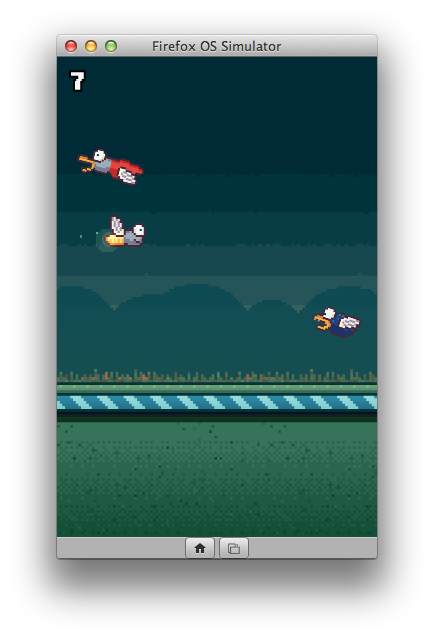
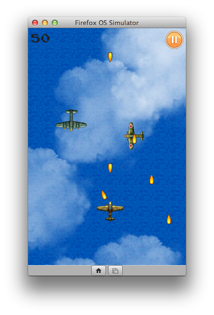

Flambe 即以 Haxe 程式語言為基礎所開發的跨平台開放源碼遊戲引擎。相關遊戲均編譯為 HTML5 或 Flash，並可針對桌面版或行動版瀏覽器進行最佳化。HTML5 Renderer 雖預設使用 WebGL，但在較初階的手機上仍可改用 Canvas 標籤並正常作業。Flash Rendering 則使用 Stage 3D，以及 Adobe AIR 所封裝的原生 Android 與 iOS App。
Flambe 另提供多項功能：
- 可輕鬆載入資源
- 場景管理
- 支援觸控功能
- 完整的物理函式庫
- 可存取加速規 (Accelermeter)
Flambe 已開發出 nick.com/games 與 m.nick.com/games 上的多款 Nickelodeon 遊戲。要想了解其他遊戲大廠以此引擎開發的遊戲範例，可至 Flambe Showcase。
最近幾週以來，開發者努力讓 Flambe 引擎能支援 Firefox OS。而從 Flambe 4.0.0 版開始，只要有完整的 manifest 檔案，即可封裝 Flambe 遊戲為可發佈的 Firefox OS App。
Firefox Marketplace 上的遊戲
如果想知道 Flambe 引擎在 Firefox OS 平台上的能耐，則可參考最近提交到 Firefox Marketplace 上的二款遊戲。第一款是由 Mark Knol 所撰寫的《The Firefly Game》。遊戲裡的螢火蟲必須躲開飢餓的小鳥。此遊戲有效使用了物理、聲音、觸控等特性。

另一款則是《Shoot’em Down》空戰遊戲。玩家必須儘量擊落敵機同時躲避敵機砲火。此遊戲作者 Bruno Garcia 也是 Flambe 引擎的主要開發者。另可取得此引擎展示 App 之一的原始碼。

以 Flambe 開發 Firefox OS App
在以 Flambe 引擎開發遊戲之前，請先安裝並設定以下軟體：
- Haxe ─ 可至下載頁面取得 OSX、Windows、Linux 版本的自動安裝程式。
- Node.js ─ 用以建構專案。需 Version 0.8 或更高版本。
- Java runtime
在完成上述必要條件之後，即可執行下列指令以安裝 Flambe：
Linux and Mac may require sudo
npm install -g flambe
flambe update
123
# Linux and Mac may require sudonpm install -g flambe flambe update
如此就會安裝 Flambe 引擎並能開始撰寫 App 了！
看到這裡，你體內的遊戲熱血又沸騰起來了嗎？請繼續觀看原文更精采的內容，進一步了解更深入的程式碼吧！